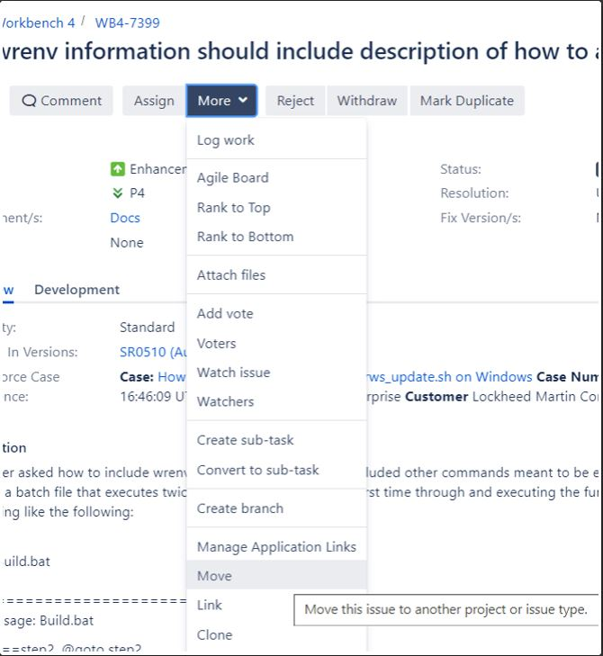
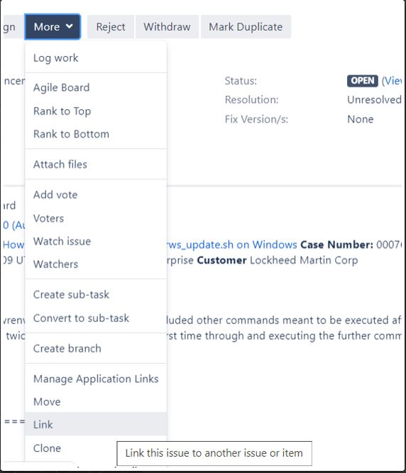

Bug
Also referred to as a defect, the Reporter of the Bug will often artificially inflate the the priority of the bug when creating it, in order to get your attention.
Use the following criteria for normalizing the priority. Below are some general guidelines, formal definition here: Information Development Documentation Defect Priorities.
P1: Customer can not continue there development because of this defect in documentation. Since we have a world class support organization to augment our documentation this should never apply to documentation.
P2: Serious quality issue that should prevent the next version of the product from shipping unless resolved. For example; incorrect guidance on a key feature in the release, that prevents it from being used by a customer
P3: Missing or incorrect documentation. If the documentation is correct, but could be improved so less experienced engineers can use it effectively, this is an enhancement, and you should move it to an enhancement.
P4: Embarrassing little mistakes. Typically typos, grammatical, and spelling that are not customer input examples
Not a bug: Regularly the Reporter will create a Bug, for something that is an Enhancement or Story. Please Move the issue, if this happens.
In general, do not change the state of a JIRA issue when it is assigned to you, or you assign it to yourself, wait until you have time to actually work on it.
Life-cycle of a documentation Bug
Open: the bug is reported
In Progress: a writer is actively working on the documentation. Don’t put in progress until you actually start working on it
On hold: temporary state, we will come back to this bug soon, but something more important came up
Checked In: the revised document topic is locked in DITA
Resolved: the revised document is “reviewed and integrated”, for documentation this means the SME has viewed the document on https://windriver-staging.zoominsoftware.io/ and says it is correct. The writer is responsible for marking the Bug resolved when they feel it is done.
Closed: the reporter of the bug closes it. They are confirming your work is complete, so leave a staging link or PDF with your work in the bug, to allow them to do this. (many VxWorks engineers will look in the git /docs directory for an updated PDF, please direct them to use on https://windriver-staging.zoominsoftware.io/ instead, git is not used to measure of integration of DITA documentation)
Story
Scheduled documentation of new features is done in a story. Anytime you are improving documentation use a story to track your work. If the documentation Story is part of new feature, it should be linked to or part of an Epic. Only execution projects can contain stories, if you are making an Enhancement Request into a Story, to work on it, you may need to move it to a different project. If a tester opens a bug against documentation, keep it as bug if it is corrections to a documentation story that has already been accepted. Comments on a story in in progress, should just be incorporated into the log of the in progress story.
In general, do not change the state of a JIRA issue when it is assigned to you, or you assign it to yourself, wait until you have time to actually work on it.
Life-cycle of a documentation Story
Backlog: We will get to some day, when we would like to get it done by is the Requested Version
Selected for Development: Engineering has given us input on the feature, we are able to work on the documentation
In Progress: The writer is actively working on the feature, or waiting for review comments. You can not put a feature in progress, unless you have estimated hours left to work on it.
Done: The writer marks the story done. The documented is “reviewed and integrated”, for us this means the SME has said the documentation on https://windriver-staging.zoominsoftware.io/ is complete and correct. Stories must have a populated definition of done field that may contain other criteria for done.
Accepted: The PA Owner of the Epic that contains the story, accepts the story. If there is no Epic, The lead writer, scrum master, designated Acceptor, or Reporter can do it. The main idea is that the assigned writer does not accept there own work.
Enhancement Request
We should encourage all stakeholders to open enhancement requests against the documentation. There is always room for improvement and it is important to capture both positive and negative feedback in way that can be acted on when resources are available. All feedback is good feedback, an enhancement request is the place to capture that.
Really a Bug?
Some engineers will report minor documentation defects as an ER, an enhancement is improvement, not a correction. If the enhancement88 is a *small correction* move it to a **bug.
Bug or Story?
You can not “work on” or “fix” an Enhancement; it must be moved to a Story or Bug to be closed.
There is catch 22 here, all Enhancement Requests are suppose to move to Stories; but stories are suppose to be part of an Epic and approved by the program before being scheduled. So use common sense, for anything requiring more than a couple hours work use a story and find an Epic to hang it off of if possible. Don’t migrate Enhancement Requests to high priority bugs, especially during the testing phase of a release.
Open: cool idea, great suggestion, improvement is needed, we just can’t get to it right now
Close: the world has changed, the feature no longer exists, the product investment for improvements is focused dramatically in other areas, or we have absolutely no idea how to implement your suggestion and neither does anyone else with free time
How to Move an Issues…

How to Link an Issues…
